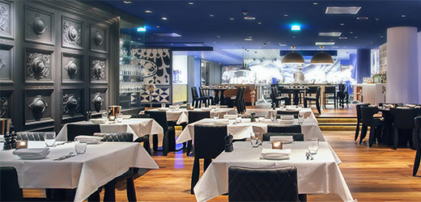

HPos
Restaurant Management Software
HPos provide restaurant management pos software for restaurant management services, it will support and help to update and manage restaurant services like sales, recipe preparation, food costing details very quick and effectively.
Pos software helps to track customer order, process credit cards, and manage inventory. Hpos software is a fully integrated system and we can use it through a server system network. Hpos will helps to make prepare daily bills and sales audit very quickly.
- Cashier billing/ Touch Based POS
- Tab Order taking /Wireless (Windows Tab)
- Table Transfer
- Remote KOT Printing
- Dine In/Home Delivery/ Room Service/ Take Away
- Customer Database
- Kitchen Display System
- Happy/Normal Hours Pricing
- Void Control
- Split /Merge Bill
- Table Transfer
- Food Costing
- Menu engineering
- Transfer and Receipt from Multiple Store/ Main Store
- Open Food/ Change Price/ Change Description
- Gift Coupon Module
- Staff Information System
- Management ,Control & Security
- Supports Special Service Charges/ Taxes for Dine In and Dine Out orders
- HPOS Reports (20+ Reports)
- Expenses Reports
- System Platform : Built on Industry tested SQL database. The application is compatible to any POS hardware that runs on Windows.
RPos
Retail Outlet Software
R Pos is a perfect solution for retail outlets like Supermarkets, Hypermarkets, Department stores and fashion outlets. The powerful integration of all sorts of POS equipment with the highly user-friendly interface software makes the checkout counter queues smooth and easy flowing
- Easy & friendly Interface
- Complete Inventory Management
- Barcode reader & Customer Pole Display support
- Auto activated Cash drawer support
- Programmable Keyboard Interface
- Product Movement
- Register Multiple Product Groups & Sub Groups
- Inventory & Non-Inventory items
- Price Change & Price Enquiry
- Prints product labels with local barcodes
- Prints Shelf tags & small barcodes for watches and small items
- Fast Lookups & Search Engines
- Suspended Sales - Sales on-hold facilities
- Discount management
- Promotion Sales /Offer Management
- Product Blocking facility
- Customizable Reports
- Special Daily Sales reports for Telephone cards
- Facility to export reports to Excel, PDF, Word etc.
- Customer & Supplier Management
- Credit Sales management
- Credit Limit & Credit Period Management
- Statement of Accounts - Receivables & Payables
- Quotation, Purchase Order, Delivery Order
- Reports by Cashier, By Item, By Groups, By Counters
- Network & Standalone Cash counter functions
- Automatic Database Backup
- Multi-user, Multi-Counter
- Multi-level security